The AaBbCc program
You are given four integer values a, b, c and m.
Check if there exists a string that contains:
* a letters 'A';
* b letters 'B';
* c letters 'C';
* no other letters;
* exactly m pairs of adjacent equal letters (exactly m such positions i that the i-th letter is equal to the (i+1)-th one).
Input
The first line contains a single integer t (1 ≤ t ≤ 10^4) — the number of testcases.
Each of the next t lines contains the description of the testcase — four integers a, b, c and m (1 ≤ a, b, c ≤ 10^8; 0 ≤ m ≤ 10^8).
Output
For each testcase print "YES" if there exists a string that satisfies all the requirements. Print "NO" if there are no such strings.
You may print every letter in any case you want (so, for example, the strings yEs, yes, Yes and YES will all be recognized as positive answer).
Example:
Input
3
2 2 1 0
1 1 1 1
1 2 3 2
Output
YES
NO
YES
Notes:
In the first testcase strings "ABCAB" or "BCABA" satisfy the requirements. There exist other possible strings.
In the second testcase there's no way to put adjacent equal letters if there's no letter that appears at least twice.
* a letters 'A';
* b letters 'B';
* c letters 'C';
* no other letters;
* exactly m pairs of adjacent equal letters (exactly m such positions i that the i-th letter is equal to the (i+1)-th one).
Input
The first line contains a single integer t (1 ≤ t ≤ 10^4) — the number of testcases.
Each of the next t lines contains the description of the testcase — four integers a, b, c and m (1 ≤ a, b, c ≤ 10^8; 0 ≤ m ≤ 10^8).
Output
For each testcase print "YES" if there exists a string that satisfies all the requirements. Print "NO" if there are no such strings.
You may print every letter in any case you want (so, for example, the strings yEs, yes, Yes and YES will all be recognized as positive answer).
Example:
Input
3
2 2 1 0
1 1 1 1
1 2 3 2
Output
YES
NO
YES
// Notes:
// In the first testcase strings "ABCAB" or "BCABA" satisfy the requirements. There exist other possible strings.
// In the second testcase there's no way to put adjacent equal letters if there's no letter that appears at least twice.
// In the third testcase string "CABBCC" satisfies the requirements. There exist other possible strings.
ANSWER
Write an essay about how Markjam 3 went.
ANSWER
MarkJam 3
For the Markjam 3, I couldn’t enter my game to the tournament,
because I had some delays on the making of the game,
but I was very excited to enter the game the Markjam,
because I had a very base idea and illusions about the game
I think it was going to be a great game,
but I would’ve like to had more time to make the game and polish it well and
also I experiment some new thinks like making my own sprites for the game,
that I thought that was going to be easier than I though,
but actually it was really difficult,
also if I would finish the game in time and joined the game to the Markjam, it was going to be a new experience because,
it was going to be the first time that
I made a game that was going to played for someone else that wasn’t me, so that was is nice for me,
because that way others persons would play my game and have opinion about the game, some good opinions and some bad but,
that way I could developed my game with the critics of the persons, but I couldn’t have the enough time to make it so,
I just thought that I wanted to finish the game, even if is not in the Markjam, because also it was and it is my first serious game, I want to give it dedication because, I have some good hopes and ideas for this game, so I’m going to finish the game anyways and now that I have an idea of how this is (the Markjam and all this kind of stuff) the next time I can do it better.
Take 10 screenshots of your work doing the React tutorial and write a paragraph for each screenshot describing what you learned.
ANSWER
Take your homework assignment from October 31 of last year and re-render it using tailwindcss. See if you can get some different visual results using that CSS instead of your own custom CSS. (Make sure to use webp instead of png or gif files.)
ANSWER
Pick your 5 favorite HTTP status cats and tell a little bit about them.
ANSWER
-
This HTTP status code means that the server is processing the request that has received. This status is to prevent that the client asume that the request is still processing and hasn’t been lost.
-
Is the response when a HTTP request has been received successfully.
-
The HTTP status 206 means that is just sent a part of the whole request of the client to the server.
-
The 301 HTTP status code means that this and all future request has moved to a different URL.
-
This means that the request hasn’t modify since the last version.
HTTP status code 102 :
HTTP status code 200 :
HTTP status code 206 :
HTTP status code 301 :
HTTP status code 304 :
Write a nodejs program that will get information about the planets of the solar system from this JSON source: JSON Solar System — once the data is read into JSON, make a loop that will console.log the rows of an HTML table. Show your code, a pretty-print of the full JSON, and incorporate the HTML table into the homework HTML.
ANSWER
| planets | |||||
| position | name | image | velocity | distance | description |
| 1 | Mercury | 47 | 58 | Mercury is the closest planet to the Sun and due to its proximity it is not easily seen except during twilight. For every two orbits of the Sun, Mercury completes three rotations about its axis and up until 1965 it was thought that the same side of Mercury constantly faced the Sun. Thirteen times a century Mercury can be observed from the Earth passing across the face of the Sun in an event called a transit, the next will occur on the 9th May 2016. | |
| 2 | Venus | 35 | 108 | Venus is the second planet from the Sun and is the second brightest object in the night sky after the Moon. Named after the Roman goddess of love and beauty, Venus is the second largest terrestrial planet and is sometimes referred to as the Earth’s sister planet due the their similar size and mass. The surface of the planet is obscured by an opaque layer of clouds made up of sulphuric acid. | |
| 3 | Earth | 29 | 149 | Earth is the third planet from the Sun and is the largest of the terrestrial planets. The Earth is the only planet in our solar system not to be named after a Greek or Roman deity. The Earth was formed approximately 4.54 billion years ago and is the only known planet to support life. | |
| 4 | Mars | 24 | 227 | Mars is the fourth planet from the Sun and is the second smallest planet in the solar system. Named after the Roman god of war, Mars is also often described as the “Red Planet” due to its reddish appearance. Mars is a terrestrial planet with a thin atmosphere composed primarily of carbon dioxide. | |
| 5 | Jupiter | 13 | 778 | The planet Jupiter is the fifth planet out from the Sun, and is two and a half times more massive than all the other planets in the solar system combined. It is made primarily of gases and is therefore known as a “gas giant”. | |
| 6 | Saturn | 9 | 1426 | Saturn is the sixth planet from the Sun and the most distant that can be seen with the naked eye. Saturn is the second largest planet and is best known for its fabulous ring system that was first observed in 1610 by the astronomer Galileo Galilei. Like Jupiter, Saturn is a gas giant and is composed of similar gasses including hydrogen, helium and methane. | |
| 7 | Uranus | 6 | 2870 | Uranus is the seventh planet from the Sun. While being visible to the naked eye, it was not recognised as a planet due to its dimness and slow orbit. Uranus became the first planet discovered with the use of a telescope. Uranus is tipped over on its side with an axial tilt of 98 degrees. It is often described as “rolling around the Sun on its side.” | |
| 8 | Neptune | 5 | 4498 | Neptune is the eighth planet from the Sun making it the most distant in the solar system. This gas giant planet may have formed much closer to the Sun in early solar system history before migrating to its present position. | |
-
This is the code
const columns = ["position", "name", "image", "velocity", "distance", "description"] console.log("<table>") console.log("<thead>") console.log("<tr>") console.log("<td>planets</td>") console.log("</tr>") console.log("<tr>") for(let col = 0; col<columns.length; col++){ console.log(`<td>${columns[col]}</td>`) } console.log("</tr>") console.log("</thead>") // Now put the planets here: for(let i=0; i<planets.length; i++){ let planet = planets[i]; console.log('<tr>') for(let j=0; j<columns.length; j++){ let col = columns[j] if(planet.name == 'Sun') break; if(col == "image"){ console.log(`<td><img src=${planet[col]} width="300" /></td>`); }else { console.log(`<td>${planet[col]}</td>`); } } console.log('</tr>') } console.log("</table>") - This is the JSON Solar system 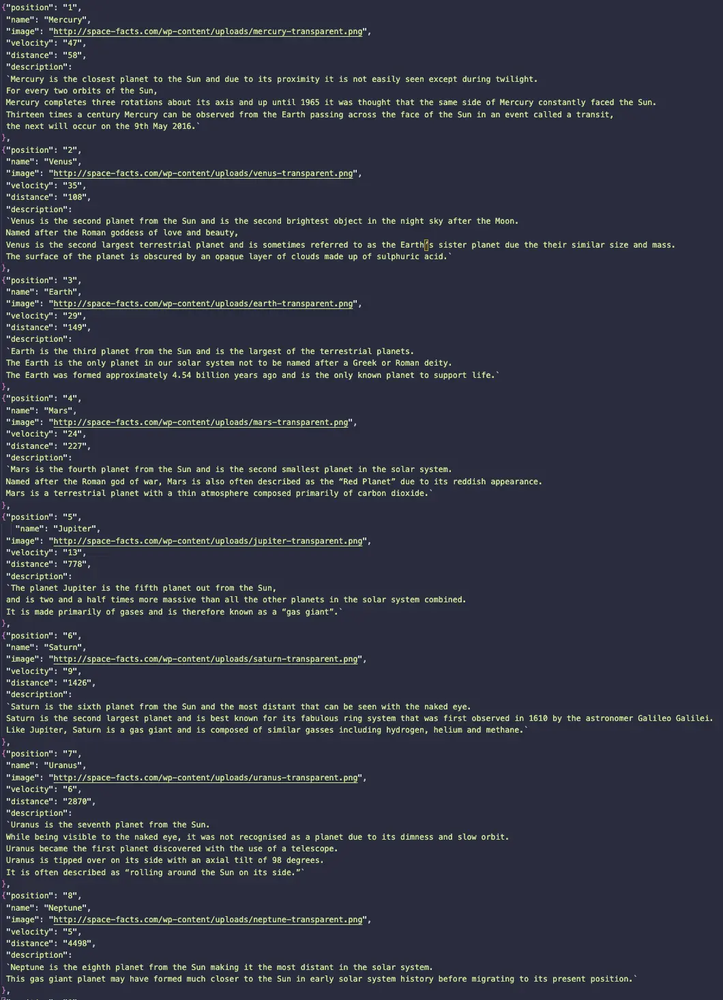
Write a “Hello World” HTTP server using expressjs. There are simple examples online. Write an explanation of how it works, and describe what were the most difficult parts of this exercise. Also, make some comments about how it compares to the plain nodejs version that we wrote.
ANSWER
The code is very similar to the nodejs one, the code first require express different as the nodejs that require html instead, then we make another constant that will invoque the express function, and then we designate the port. Then with the constant app that now is the function express we use app.get as an arraw function that is going to take two parameter, "req" that stands fot request and "res" that stands for response so we use send with the "res" parameter, that will return in the page what you put inside, in this case a string that says "Hello World!". And then we do listen that will listen to the port designated in line 3, then it will take an arrow funtcion that will print in the console "Example app listening on port ${port}" in this case ${port} is 3000.
This is the code example:
const express = require('express')
const app = express()
const port = 3000
app.get('/', (req, res) => {
res.send('Hello World!')
})
app.listen(port, () => {
console.log(`Example app listening on port ${port}`)
})
The most difficult thing was when I was looking for a file in the terminal and I though the file was created automatically, but it wasn't so I had to do a research for it till I found it.
Write a very rudimentary single player racecar game using the C language and ncurses. There should be a game loop that draws a random racetrack and the player uses the left and right arrow keys to navigate. If you like, add occasional obstacles that the driver has to avoid. Use simple ASCII or Unicode graphics, nothing fancy. Look for ncurses snake game examples online to get started.
ANSWER
Simple JavaScript console work:
- let x = [] // the x array will serve as a “Dequeue” data structure. See the next exercise for more information on this. “Dequeue” stands for “double-ended queue”.
- x.push('f')
- x.push('o')
- x.push('o')
- x.unshift('r')
- x.unshift('a')
- x.unshift('b')
- x.pop()
- x.shift()
ANSWER
- let x = [] First we make an empty array to put some elements after.
- x.push('f') Now we add a element f to the end of the array with push
- x.push('o') Then another element that will be o
- x.push('o') Then we push another o
- x.unshift('r') Then with unshift we add in the beginning of the array a new element r
- x.unshift('a') We add another element to the beginning of the array, the element is a
- x.unshift('b') Then we add a b to the beginning of the array with unshift
- x.pop() Then we use pop to delete the las element of the array. So the array is ['b', 'a', 'r', 'f', 'o'] now
- x.shift() Then we use shift to delete the first element of the array. Now the array looks ['a', 'r', 'f', 'o']
So the array would looks like ['f', 'o', 'o']
So the array now looks ['b', 'a', 'r', 'f', 'o', 'o']
Implement this programming language: https://concatenative.org/wiki/view/Deque. So write a function called dqInterpret(instructions) that will take a string that contains instructions in this language, and then apply those instructions to an empty Dequeue, showing every step along the way. For example, the wiki example starts with the instructions “3! !5 !2 sub! !add” and through a series of steps arrives at a Dequeue that looks like this: [4]. It should show this:
- []
- [3]
- [5, 3]
- [2, 5, 3]
- [2, 2]
- [4]
ANSWER
Recall the topology exercise that turned a donut into a coffee cup. Do the same sort of thing, however this time, separate the two linked circles. Either create 7 photos using plasticine, or draw seven images showing the transition. Do you think a computer program could solve this question? Write down a paragraph talking about how you might approach this with a computer.

ANSWER
Look up “Rule 110" in regard to the subject of finite automata. Describe how Rule 110 works, then implement it in JavaScript using either p5js, or straight canvas.
ANSWER
This is how rule 110 works:
<!DOCTYPE html>
<head>
<title>Rule 110</title>
<style>
.range {
width: 400px;
height: 15px;
-webkit-appearance: none;
background: rgb(255, 255, 255);
outline: none;
border-radius: 15px;
overflow: hidden;
box-shadow: inset 0 0 5px rgb(255, 255, 255);
}
.range::-webkit-slider-thumb {
-webkit-appearance: none;
width: 15px;
height: 15px;
border-radius: 50%;
background: #000000;
cursor: pointer;
border: 4px solid rgb(255, 255, 255);
box-shadow: -407px 0 0 400px #ffffff;
}
body{
display: flex;
flex-direction: column;
align-items: center;
justify-content: center;
color: rgb(255, 255, 255);
}
</style>
<script src="https://cdn.jsdelivr.net/npm/p5@1.4.1/lib/p5.js"></script>
<script>
let gameSpeed = 700;
let playing = false;
function switchState() {
playing = !playing;
let btn = document.getElementById('play_stop');
btn.textContent = playing ? 'Stop' : 'Play';
}
const extension = 50;
let universe = new Array(extension).fill(0).map(() => new Array(extension).fill(0));
universe[0][extension - 1] = 1;
function drawCells(displaySize, cells) {
const SCALE = displaySize / cells.length;
for (let row = 0; row < cells.length; row++) {
for (let col = 0; col < cells[row].length; col++) {
stroke(52, 46, 55)
if (cells[row][col] == 0) {
fill(255, 255, 255);
square(col * SCALE, row * SCALE, SCALE);
} else {
fill(0, 0, 0)
square(col * SCALE, row * SCALE, SCALE);
}
}
}
}
function next(cells, row){
for (let col = 0; col < cells[row].length; col++) {
let a = cells[row - 1]?.[col - 1] || 0;
let b = cells[row - 1]?.[col] || 0;
let c = cells[row - 1]?.[col + 1] || 0;
let neighboursAlive = `${a}${b}${c}`;
let currentState = cells[row][col]
let nextState = checkRules(currentState, neighboursAlive)
cells[row][col] = nextState
}
return cells;
}
function checkRules(cellState, neighboursAlive){
const rule110 = {
'111': 0,
'110': 1,
'101': 1,
'100': 0,
'011': 1,
'010': 1,
'001': 1,
'000': 0,
}
return rule110[neighboursAlive];
}
async function setup() {
let cnv = createCanvas(800, 800);
let SCALE = Math.floor(800/universe.length);
background(255, 255, 255);
fill(255, 255, 255)
square(0, 0, 800);
drawCells(800, universe);
cnv.mouseClicked(() => {let row = Math.floor(mouseY/SCALE); let col = Math.floor(mouseX/SCALE); universe[row][col] = universe[row][col] == 1 ? 0 : 1; drawCells(800, universe)})
let index = 1;
while(true){
if(playing){
drawCells(800, universe);
universe = next(universe, index);
index++;
}
await new Promise(resolve => setTimeout(resolve, gameSpeed));
}
}
</script>
<h1>Rule 110</h1>
<!-- <button id='theme' onclick="javascript:switchTheme()">Switch Theme</button> -->
<button id='play_stop' onclick="javascript:switchState()">Play</button>
<!-- <button id='clear' onclick="javascript:clear()">Reset</button> -->
<div>
<span id="rangeValue">Speed:</span>
<input class="range" type="range" value="700" min="100" max="1500" onchange="javascript:gameSpeed = 1600 - Number.parseInt(this.value)"></input>
</div>
</head>
<body bgcolor="#3f3f40">
</body>
Look up the term “Jordan curve” (pronounced Jordán). Explain what a Jordan curve is. With paper and pencil draw six examples of Jordan curves. Try to make them as different as possible. Make one or two simple ones, but make some really complicated ones also.
ANSWER
A jordan curve is all closed curve, that can take every form as long as the lines doesn't cross each other and this curve cut the plane into 2 parts, the exterior and the interior.
Here are some examples:


There is mathematical conjecture that says: For any Jordan curve you can always find four points on it that can be connected to form a square. Draw a non-trivial Jordan curve and show where you can put those four points to make a square.
ANSWER
Have a look at the online Turing Machine Simulator: turing machine simulator -- study the programs there and understand how they work. Write a few paragraphs that answer this question: What is a Turing Machine? Then write the following programs on the Simulator:
- multiply a binary number by 2
- add 1 to a binary number
ANSWER
-
It's a very simple code to write actually, it wasn't so dificult to made.
Here is a example of what the output would be: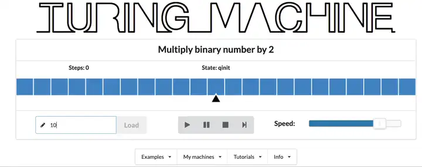And here is the code of it://-------CONFIGURATION name: Multiply binary number by 2 init: qinit accept: qDoubled //-------DELTA FUNCTION: qinit,0 qinit,0 , > qinit, 1 qinit, 1, > qinit, _ qDoubled,0 , - -
Here is an example of the input:
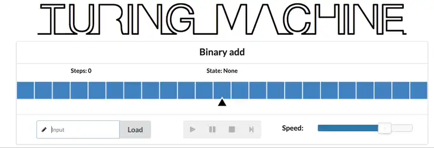And here is the code of it:
name: Binary add init: q0 accept: qHalt q0, 0 q0, 0, > q0, 1 q0, 1, > q0, _ goBackwards, _, < goBackwards, 1 CarryOne, 0, < goBackwards, 0 q3, 1, < CarryOne, 1 CarryOne, 0, < CarryOne, 0 q3, 1, < CarryOne, _ q3, 1, < q3, 0 q3, 0, < q3, 1 q3, 1, < q3, _ qHalt, _, -
Ali is a dean of a private school where he teaches one class. John is also a dean of a public school. John has two classes in his school. Each class has 1/8 the capacity of Ali’s class which has a capacity of 120 students. What is the combined capacity of both schools?
ANSWER
---- Capacity of John’s class:
1/8 * 120
= 120 / 8
= 15
---- As there are two classes, it’s duplicated:
2 * 15 = 30
---- Then combaining boths:
120 + 30 = 150
------> In conclusion the capacity of boths classes comnbinied is 150 students
Tim grows 5 trees. Each year he collects 6 lemons from each tree. How many lemons does he get in a decade?
ANSWER
Tim every year collects 30 lemons because he has 5 trees and gets 6 lemons for every tree every year, so we multiply that result by 10 because is asking how many lemons he gets in a decade and a decade is 10 years so we multiply the amounts of lemons that he get every year with the 10 years of a decade and the result is 300 lemons.
---- These are the lemons that Tim collect every year
5 * 6 = 30
---- Now that we now how many lemons Tim collect every year we multiply that to the 10 years of a decade
30 * 10 = 300
----> Tim got 300 lemons every decade <----
Anthony had 50 pencils. He gave 1/2 of his pencils to Brandon, and he gave 3/5 of the remaining pencils to Charlie. He kept the remaining pencils. How many pencils did Anthony keep?
ANSWER
He gave 1/2 of the 50 pencils to Brandon so that’s the half of the pencils, which is 25,
now he just have 25 pencils and he gave 3/5 of the 25 pencils to Charlie that would be 15 of 25 pencils now he is just with 10 pencils left.
To now how many pencils does Brandon have we multiply the 50 pencils of Anthony with the 1/2 that gave to Brandon
------ 50 * 1/2 = 25
Now, we have to now, how many pencils does Anthony have left:
------ 50 - 25 = 25
- Anthony have kept 25 pencils -
Then he gave a 3/5 of his pencils so:
------ 3/5 * 25 = 15
- So he gave 15 pencils to Charlie -
Now, hoy many pencils does Anthony have left?
------ First we add the total quantity of pencils that Anthony gave
15 + 25 = 40
-And now we subtract that result to the original number of pencils that Anthony had:
40 - 50 = 10
--------> Anthony have kept 10 pencils <--------
Find a number x ∈ {0, 1, … , 112} such that 11x ≡ 1 (mod 113).
ANSWER
I mix my ideas of how to do it with some piece of code:
for(let x=1; x <= 112; x++){
if(x*11%113 == 1){
console.log(x, 11*x);
}
}
Let x and p be real numbers. Prove that if |x-2| = p, where x < 2, then x-p = 2-2p.
ANSWER
Make an HTML page that has a small image in it, but that image doesn’t require an extra file; the image is actually embedded in the HTML so that you only have one file.
ANSWER
<!DOCTYPE html>
<html lang="en">
<style>
div.image
{
display: flex;
flex-direction: column;
align-items: center;
justify-content: center;
max-width: 100%;
flex-wrap: wrap;
}
</style>
<head>
</head>
<body>
<div class="image">
<img src="data:image/gif;base64,iVBORw0KGgoAAAANSUhEUgAAAIYAAACfCAMAAAAL
flHwAAAABGdBTUEAALGPC/xhBQAAACBjSFJNAAB6JgAAgIQAAPoAAACA6AAAdTAAAOpgAAA6mA
AAF3CculE8AAACMVBMVEX////8/Pz+/v76+vr39/f09PTu7u7c3NzAwMCenp6srKzq6uri4uK1
⦗⦗ similar data omitted ⦘⦘ QNBwLoxahEUPPLqk8AYnBEjQIz6hcBa+TWje/f31vcsi/xa
A8i92iv3D/wFUKzBIDsjV3QAAAABJRU5ErkJggg=="
alt="Base64 encoded image"/>
</div>
</body>
</html>
Write an algorithm that takes an array and moves all of the zeros to the end, preserving the order of the other elements. For instance: moveZeros([1,2,0,1,0,1,0,3,0,1]) == [1,2,1,1,3,1,0,0,0,0]
ANSWER
function moveAllZeroes(array){
for(let i = 0; i < array.length; i++){
let n = array[i];
if(n == 0){
array.splice(i, 1);
array.push(0);
}
}
return array;
}
And here is an example of what it returns:
Work on CodeCombat: Take 7 screenshots and write 7 short paragraphs describing each screenshot.
ANSWER
-
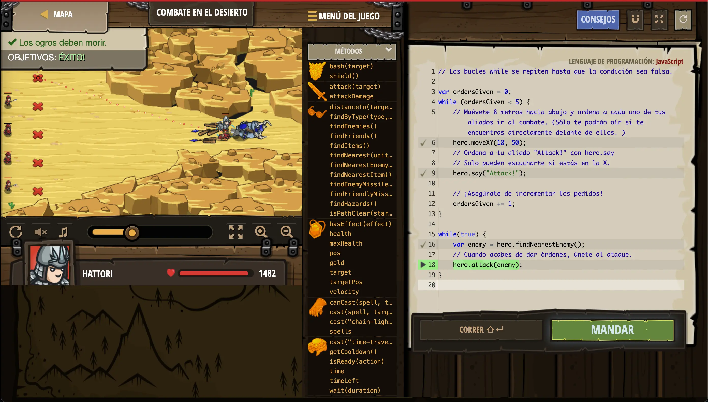
-
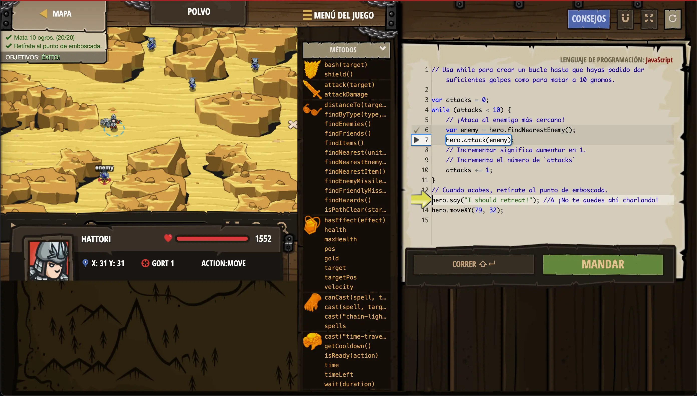
-
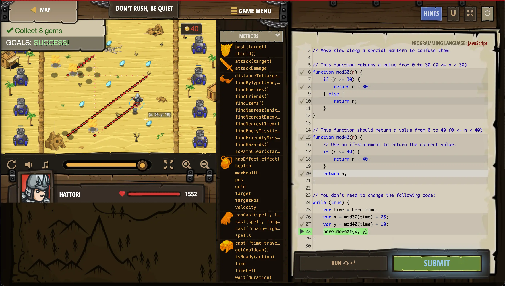
-
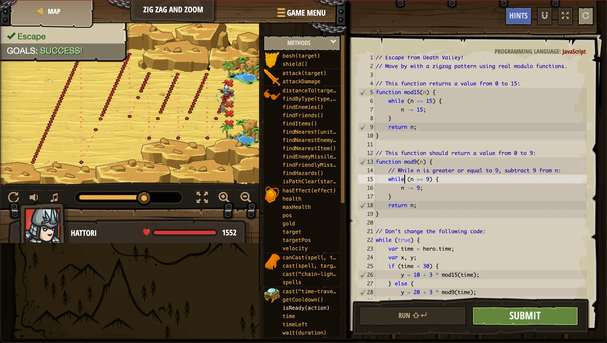
-
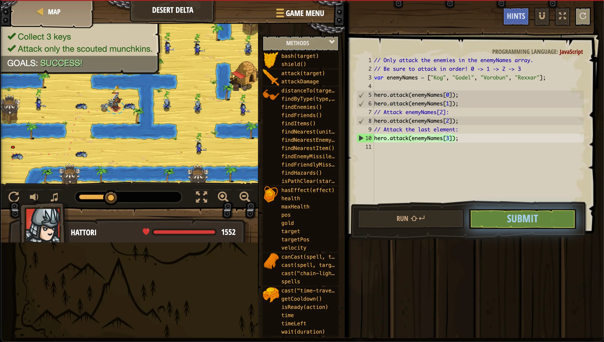
-
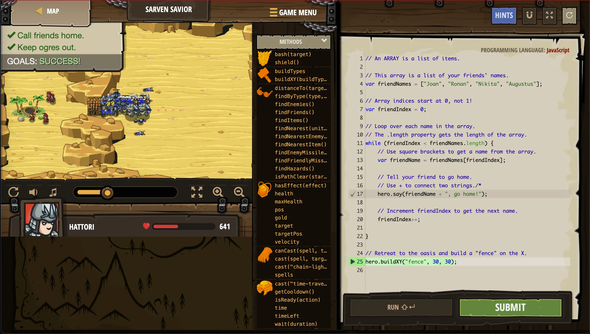
-
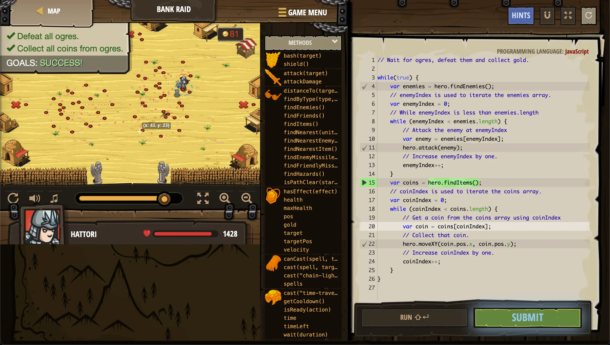
-
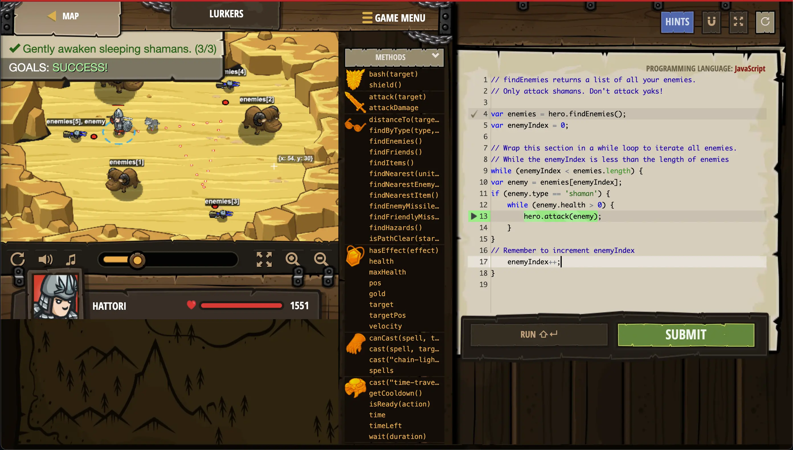
-
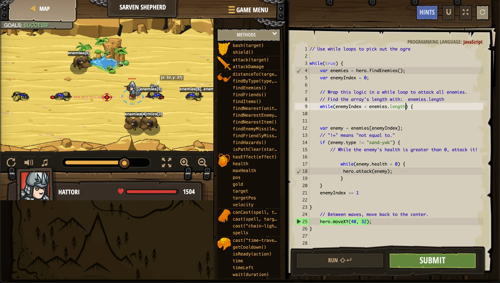
-
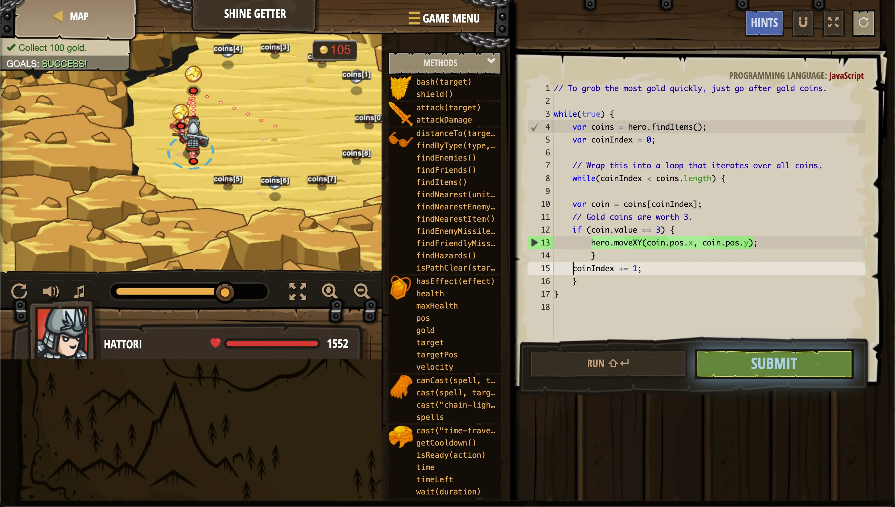